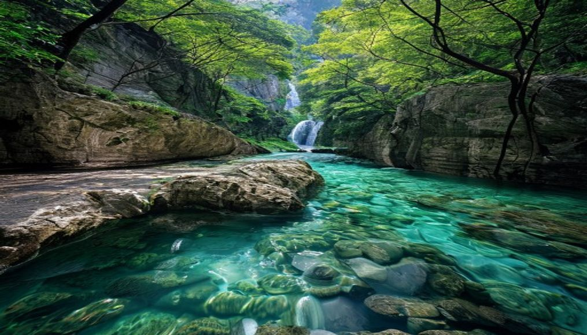
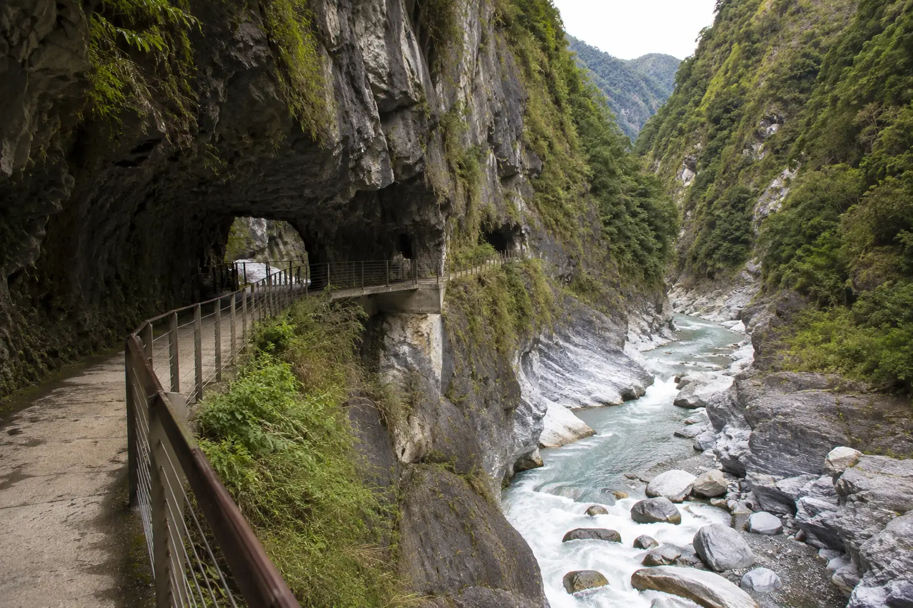
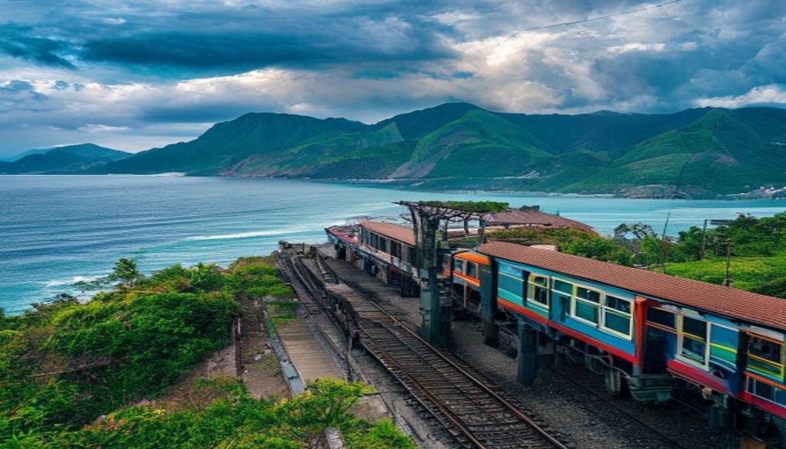

🗓️ 三天兩夜行程建議
Day 1
花蓮市區 → 太魯閣 → 七星潭
- 上午：抵達花蓮站，租機車前往 太魯閣國家公園
- 推薦步道：砂卡礑步道（來回2小時，平緩好走，水色超美）
- 中午：太魯閣遊客中心附近原住民風味餐
- 下午：長春祠 + 燕子口（車行欣賞即可）
- 傍晚：騎到 七星潭 看海踩鵝卵石，等夕陽
- 晚餐：花蓮市區 東大門夜市 掃街
🌅 小編真心話：七星潭的夕陽是我人生看過前三美的夕陽，沒有之一。記得脫鞋踩鵝卵石，那種被海浪沖刷的感覺超療癒。

✨ 小編真心話：砂卡礑步道的水真的會讓你以為自己在九寨溝，碧綠到不真實。建議早上八點前到，不僅光線最美，還能獨享整條步道。

📸 實拍直擊：走近溪邊才發現水色比照片還震撼，大理石壁上的紋路像一幅天然水墨畫。步道平緩好走，穿雙好走的鞋就能輕鬆來回。
Day 2
台11線海岸公路 → 石梯坪 → 豐濱秘境

🚂 小編真心話：多良車站真的值得專程跑一趟！看紅色列車緩緩穿過藍色海灣的那一瞬間，整個人都靜下來了。帶個便當在月台上吃，人生圓滿。
🏔️ 太魯閣步道推薦
| 步道 | 難度 | 時間 | 特色 |
|---|
| 砂卡礑 | ★☆☆ | 2hr | 碧綠溪水、好走 |
| 白楊步道 | ★★☆ | 2.5hr | 水簾洞、需申請 |
| 錐麓古道 | ★★★ | 4-6hr | 懸崖峭壁、限量申請 |
| 綠水步道 | ★☆☆ | 1hr | 合歡越嶺古道遺跡 |
💡 太魯閣注意：2024年0403地震後部分步道封閉修復中，出發前務必上太魯閣國家公園官網確認開放狀態。白楊步道和錐麓古道需提前線上申請入園許可。
🏠 海景民宿推薦
- 花蓮 聖托里尼民宿：希臘風白色建築，陽台直面太平洋，雙人房 NT$2,200起
- 花蓮 海中天會館：七星潭旁，躺在床上看海日出，雙人房 NT$2,800起
- 台東 娜路彎大酒店：知本溫泉區，泡湯+海景，雙人房 NT$3,500起
- 台東 都蘭 小房子咖啡民宿：都蘭灣海景第一排，文青風格，雙人房 NT$2,000起
🍜 必吃美食清單
花蓮
- 炸蛋蔥油餅：黃車/藍車，花蓮必吃排隊美食（NT$35）
- 公正包子：24小時營業，一顆NT$5，蒸餃也超推
- 鵝肉先生：本地人最愛的鵝肉切盤，湯麵也很鮮
- 戴記扁食：花蓮扁食老店，薄皮大餡
台東
- 榕樹下米苔目：台東人的早餐，滑順Q彈（NT$45）
- 林家臭豆腐：泡菜臭豆腐，外酥內嫩
- 正老東台米苔目：另一家米苔目老店，兩家都吃比較看看
🏍️ 租機車攻略
- 價格：125cc 約 NT$500/天，電動車 NT$400/天
- 取車地點：花蓮火車站周邊機車行最密集
- 必帶：機車駕照（輕型或普通重型）+ 身分證
- 注意：台11線彎道多，過彎減速；加油站在花蓮市區和成功鎮各一，加滿再出發
❓ 常見問題
花蓮台東適合開車還是騎機車？
3天2夜建議租機車（125cc約NT$500/天），機動性高且停車方便。開車適合4人以上或帶長輩，但台11線有些路段狹窄需小心。
花蓮台東幾天最合適？
最少3天2夜：Day1花蓮（太魯閣+七星潭）→Day2花東公路南下（清水斷崖+瑞穗牧場+伯朗大道）→Day3台東（綠島或都蘭）→回程。想玩更深度建議4-5天。
花東自駕要注意什麼？
①蘇花公路注意落石，下雨天別走 ②台11線部分路段窄，禮讓大型車 ③花東不少路段無手機信號，提前下載離線地圖 ④日落後避免走山路 ⑤加油站的間隔較遠，見到加油站就加滿。
花蓮有什麼必吃美食？
①公正街包子（早上排隊名店）②廟口紅茶③花蓮薯（扁鵲醬油旁邊）④原住民石板烤肉⑤海鮮（七星潭附近）⑥液香扁食。公正街和自強夜市是美食集中區。
台東有什麼好玩的？
①綠島（浮潛+溫泉+梅花鹿）②蘭嶼（潛水+環島）③都蘭海岸④池上便當（便當博物館）⑤多良車站（最美海景車站）⑥红叶温泉。台東適合慢活，不要排太滿行程。
花蓮台東住宿推薦？
花蓮：市區（交通便利、餐廳多）、七星潭（海景民宿）、太魯閣附近（山景靜謐）。台東：市區（平價）、都蘭（文青背包客）、綠島民宿（需提前預約）。花蓮住宿選擇比台東多，旺季務必提前1個月訂房。